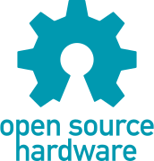

Recently revised logo by Mateo Zlatar under the aegis of the Open Hardware Summit (right click on image to save)


Adobe Illustrator CS3: oshw-logo.ai
PDF: oshw-logo.pdf
Scalable vector graphics by Brandon Stafford

Original logo by Macklin Chaffee (right click on image to save)

Macklin's original Photoshop file: ohw-logo.psd
PDF of just the gear by Adam Meyer: ohw-logo.pdf
Adobe Illustrator by "havehalf": ohw-logo.ai
Truetype font by David Siren Eisner: ohw-logo.ttf
Scalable vector graphics by Brandon Stafford and the aforementioned Adam Meyer (right click on images to save)


Scalable vector graphics with the kerning adjusted by "base736"

gEDA by Windell Oskay: ohw-logo.pcb
Kicad by Matthew Beckler: ohw-logo.mdc, ohw-logo.mod
Kicad (scalable) by Robert Spitzenpfeil: OSHW_logo_KiCad_scalable.zip
Kicad (copper layer, no words) by Nathan Dumont: oshw-logo-kicad-copper-10mm.mod
Eagle script by Bill Westfield: ohw-logo.ulp
Eagle script with prompts by Michael Shimniok: ohw-logo-with-prompts.ulp
Eagle library by Andrew Tergis: ohw-logo.lbr
DXFs, SCAD, and STL files by Andrew Plumb:
ohw-logo.dxf
ohw-logo-shell-4-mm.dxf
ohw-logo.scad
ohw-logo.stl
Antipixels from Simone Marzulli, AKA Syxanash:
GIMP source files for antipixels: oshw-logo-antipixel.xcf, ohw-logo-antipixel.xcf
None so far
What is this?
This is a repository of graphics files used by the designers of open source hardware.
Do you own the logo? Did you create it?
No. No. (I did make the SVG files.)
Is this some weird trademark trolling scheme run by an evil corporation?
No. I will be excited to turn over responsibility for this site to the Open Source Hardware Foundation, once it exists.
Someone's making an Open Source Hardware Foundation?
Well, no, not yet. That's why I made this page.
How do I add a file?
Email Brandon a copy at logo at rascalmicro dot com. If you want attribution, please include your name and a link.
Will you convert a file to another format for me?
Probably not, but if you tell me what format you want, I'll add it to the list of requested formats.
What font was used in the original logo?
Nova Mono from Google's web font repository, but with the anti-aliasing adjusted in Photoshop.
What about the revised logo with the word "source" added? What font is that?
Unknown! Unknown! (Do you know? Tell Brandon: logo at rascalmicro dot com!)
It at least looks similar to DIN 1451 Mittelschrift.
And the color of the logo with the word "source" added? Any idea?
CMYK: 100, 15, 30, 0
RGB: 0, 153, 176
Pantone: 3135C
Why do only some of the logos have the word "source" in them?
It's hoped that this is a temporary condition. The Open Hardware Summit folks have a graphic designer who is in the midst of reworking the logo. By mid-September of 2011, it's pretty likely that the logo will be all fixed up, and it will be time for people like you (yes, you!) to convert the final version to all sorts of different formats.
(Update, late 2011: the logo may well be as fixed up as it's going to get. More formats welcome.)
All fixed up? What's wrong with the logo as it is?
It is rumored to be slightly asymmetrical. If you can't tell the difference, don't worry about it. Back to your Arduino!